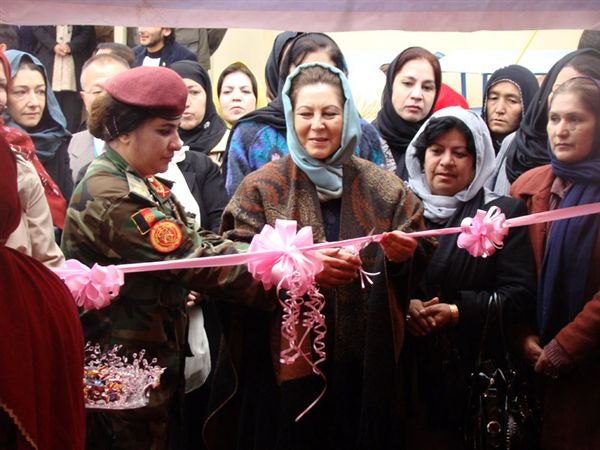

|
|
نمایشگاه آثار دستی زنان که به مناسبت هفته محو خشونت علیه زنان، تدویر شده است
يكشنبه8 آذر 1388
از روز جهانی محو خشونت علیه زنان تجلیل شد
رادیو آزادی - در نمایشگاه آثار دستی زنان که به روز سه شبه به مناسبت هفته محو خشونت علیه زنان به راه افتاده 10 نوع آثار دست دوزی زنان مرکز و ولایات در بیش از 60 غرفه به چشم می خورد. این آثار همه نمایانگر لباس های سنتی مناطق مربوط بوده که همه دست اندر کاران این غرفه ها را نیز خانم ها تشکیل می دهد.

خانم انجمن رحیمی رییس توسعهء اقتصاد وزارت امور زنان در رابطه به تدویر این نمایشگاه گفت:
"در حدود 60 الی 70 موسسه یا ان جی او همکار ما سهم دارند، بیشتر تولیدات مختلف خود را در این جا در معرض نمایش قرار داده اند، از آن جمله نجاری، حکاکی، دست دوزی، اریکین سازی می باشد."
در غرفه های آثار تولیدی زنان که به مناسبت هفتهء محو خشونت علیه زنان به راه افتاده، آثاری نیز به چشم می خورد که توسط زنان زندانی دست دوزی و بافت شده است. خانم ابره صدیقی مسوول یکی از این غرفه ها می گوید:
"کار های است که خانم ها در زندان انجام می دهند، مواد خام از ما می باشد. به خاطر مصروفیت آنها و هم چنان یک مقدار پول نیز از این درک بدست میاورند."
در نمایشگاه آثار صنایع دستی زنان که به مناسبت هفته محو خشونت علیه زنان تدویر شده بود خانم حسن بانو غضنفر سرپرست وزارت امور زنان پیرامون اقدامات آن وزارت در رابطه به انکشاف صنایع دستی خانم های افغان صحبت کرد و گفت:
" وزارت امور زنان تلاش می کند تا یک بازار یابی خوب برای تولیدات زنان افغان بوجود آید و آثار تولیدی زنان به مارکیت های بین المللی راه یابد."
وزارت امور زنان افغانستان در نظر دارد تا امسال نیز به تاریخ 4 قوس از روز بین المللی محو خشونت بزرگ داشت به عمل آورد و به همین مناسبت کمپاین دو هفته ای در سراسر این کشو به راه افتاده است.
اقدامات وزارت امور زنان به مناسبت هفته محو حشونت علیه زنان در حالی صورت می گیرد که مردم این کشور روزمره شاهد ده ها حادثه حشونت و خود سوزی زنان افغان هستند و موارد متعدد خشونت از جمله تجاوز های جنسی بالای زنان و اطفال از هر گوشه و کنار این کشور به گوش می رسد.
کارشناسان معتقدند تا سطح باز پرسی ها افزایش نیابد وعاملان خشونت ها توسط ارگان های عدلی و قضایی مورد پیگرد قرار نگیرند.
زنان افغان هم چنان در مظلومیت به سر برده و سلسله خشونت ها هم چنان ادامه خواهد یافت.
گزارشگر: حمید "پژمان"